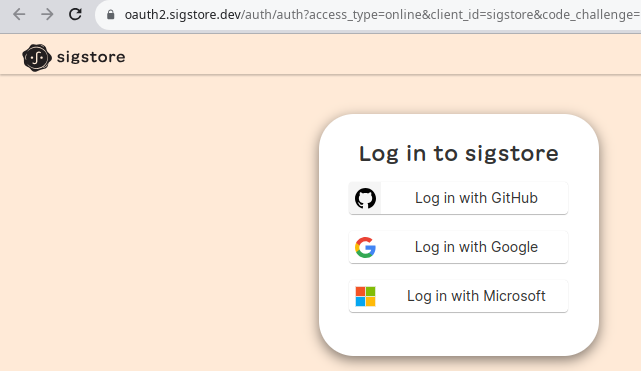

Software developers can securely sign software artifacts with the sigstore toolkit the signing can range from blobs to OCI images and SBOM with attestations. This post will go through a live usage of these tools and examplification in a pragmatic way how to use and what problem they solve.
Sigstore claims to be the Lets Encrypt of the supply chain, making it easy to fix some known issues in the software provenance this presentation brings a few ideas around the digital signature challenge on integrity, authenticity and non-repudiation. Highlighing the key distribution and key compromising.
To solve it the sigstore toolkit simplifies the signing interface allowing transparency, integrity and assurance. Sigstore can eliminate the key management problem by using ephemeral keys.
Accordingly the author code provenance is the ability to have a chain of custody showing where code originated and from whom.
A few key tools exists for it to exists to support the project:
Fulcio was designed to avoid revocation by issuing the short-lived certificates instead. When validating the signature, the policy controller only needs to know that the artifact was signed while the certificate was valid.
Policy controller can leverage Fulcio’s short-lived code signing certificates and Rekor’s transparency log to confirm that an atifact was signed while the certificate was valid. When a signature is stored in the log, the associated entry is included into the log with a signed timestamp, it can request the entry cryptographically verify the timestamp is correct, and verify that an artifact was signed while the certifacte was valid.
To install the policy-controller via Helm
helm repo add sigstore https://sigstore.github.io/helm-charts
helm repo update
kubectl create namespace cosign-system
helm install policy-controller -n cosign-system sigstore/policy-controller --devel
Create a new namespace and apply the policy verification via admission webhook:
kubectl create namespace secure
kubectl label namespace secure policy.sigstore.dev/include=true
First step is to sign the OCI image, in this case I’m doing a copy of an external container to a registry it’s possible to write
docker tag nicolaka/netshoot:latest knabben/netshoot:latest
docker push knabben/netshoot:latest
CI can use SPIFFE id for signing, or a regular dev can use OICD authentication, with cosign:

❯ cosign sign -a real=true knabben/netshoot:latest
Generating ephemeral keys...
Retrieving signed certificate...
The sigstore service, hosted by sigstore a Series of LF Projects, LLC, is provided pursuant to the Hosted Project Tools Terms of Use, available at https://lfprojects.org/policies/hosted-project-tools-terms-of-use/.
Note that if your submission includes personal data associated with this signed artifact, it will be part of an immutable record.
This may include the email address associated with the account with which you authenticate your contractual Agreement.
This information will be used for signing this artifact and will be stored in public transparency logs and cannot be removed later, and is subject to the Immutable Record notice at https://lfprojects.org/policies/hosted-project-tools-immutable-records/.
By typing 'y', you attest that (1) you are not submitting the personal data of any other person; and (2) you understand and agree to the statement and the Agreement terms at the URLs listed above.
Are you sure you would like to continue? [y/N] y
Your browser will now be opened to:
https://oauth2.sigstore.dev/auth/auth?access_type=online&client_id=sigstore&code_challenge=...
Successfully verified SCT...
WARNING: Image reference knabben/netshoot:latest uses a tag, not a digest, to identify the image to sign.
This can lead you to sign a different image than the intended one. Please use a
digest (example.com/ubuntu@sha256:abc123...) rather than tag
(example.com/ubuntu:latest) for the input to cosign. The ability to refer to
images by tag will be removed in a future release.
tlog entry created with index: 29686804
Pushing signature to: index.docker.io/knabben/netshoot
After authenticating in the web browser, the signature is pushed its possible to use the certificate property to manually validate it:
❯ cosign verify knabben/netshoot --certificate-identity=user@gmail.com --certificate-oidc-issuer=https://accounts.google.com | jq .
[
{
"critical": {
"identity": {
"docker-reference": "index.docker.io/knabben/netshoot"
},
"image": {
"docker-manifest-digest": "sha256:d845da1645d514a0ddf3ee1fe4df9a2cdae4d0f1f45dc9d16a34cf253366cb71"
},
"type": "cosign container image signature"
},
"optional": {
"1.3.6.1.4.1.57264.1.1": "https://accounts.google.com",
"Bundle": {
"SignedEntryTimestamp": "...",
"Payload": {
"body": "...",
"integratedTime": 12345,
"logIndex": 12345,
"logID": "..."
}
},
"Issuer": "https://accounts.google.com",
"Subject": "user@gmail.com",
"real": "true"
}
}
]
Use $ crane manifest $(cosign triangulate $IMAGE) | jq . to learn about the layers and bundle
stored in the image.
It can work more like an ACL for starting the images with pass || fail settings:
apiVersion: policy.sigstore.dev/v1beta1
kind: ClusterImagePolicy
metadata:
name: image-policy
spec:
images:
- glob: "index.docker.io/knabben/**"
authorities:
- static:
action: pass
Run the netshoot image
kubectl run netshoot --image=docker.io/knabben/netshoot
pod/netshoot created
Try to run the official not signed one and get the webhook denying it:
❯ kubectl run netshoot --image=docker.io/nicolaka/netshoot
Error from server (BadRequest): admission webhook "policy.sigstore.dev" denied the request: validation failed: no matching policies: spec.containers[0].image
index.docker.io/nicolaka/netshoot@sha256:a7c92e1a2fb9287576a16e107166fee7f9925e15d2c1a683dbb1f4370ba9bfe8
Its possible to add a keyless authentication against the default Fulcio server for example:
apiVersion: policy.sigstore.dev/v1beta1
kind: ClusterImagePolicy
metadata:
name: image-policy
spec:
images:
- glob: "index.docker.io/knabben/**"
authorities:
- keyless:
identities:
- issuer: https://accounts.google.com
subject: amim.knabben@gmail.com
The same deny apply when the container is not signed
❯ kubectl run httpbin --image=docker.io/knabben/test
Error from server (BadRequest): admission webhook "policy.sigstore.dev" denied the request: validation failed: failed policy: image-policy: spec.containers[0].image
index.docker.io/knabben/test@sha256:e72dc35fb44df0b22e7ff622b7f702de7534d573767723aaa89ee6db2cb8ac78 signature keyless validation failed for authority authority-0 for index.docker.io/knabben/test@sha256:e72dc35fb44df0b22e7ff622b7f702de7534d573767723aaa89ee6db2cb8ac78: no signatures found for image
BOM as a “formal record containing the details and supply chain relationships of various components used in building software,” similar to food ingredient labels on packaging. SBOMs hold the potential to provide increased transparency, provenance, and speed at which vulnerabilities can be identified and remediated by federal departments and agencies.
It’s possible to generate a standard SBOM CycloneDX with syft and attest the OCI image using in-toto attestations:
syft knabben/netshoot:latest -o cyclonedx-json > netshoot.sbom.json
cosign attest --predicate netshoot.sbom.json --type cyclonedx knabben/netshoot -d
Validate the attestation predicateType of the OCI image is CycloneDX using cosign:
cosign verify-attestation --type cyclonedx -d knabben/netshoot \
--certificate-identity=user@gmail.com \
--certificate-oidc-issuer=https://accounts.google.com
Generate a ClusterImagePolicy with the CUE settings for handling the predicateType, you can check information from the predicate as well:
apiVersion: policy.sigstore.dev/v1beta1
kind: ClusterImagePolicy
metadata:
name: image-policy
spec:
images:
- glob: "index.docker.io/knabben/**"
authorities:
- keyless:
identities:
- issuer: https://accounts.google.com
subject: user@gmail.com
attestations:
- name: must-have-cyclonedx
predicateType: "https://cyclonedx.org/bom"
policy:
type: cue
data: |
predicateType: "https://cyclonedx.org/bom"
predicate: {
specVersion: "1.4"
metadata: {
tools: [
{
name: "trivy"
}
]
}
}
Start a new container with a SBOM attached with syft or change the spec version to receive a DENY after the signing is checked:
❯ kubectl run netshoot --image=docker.io/knabben/netshoot
Error from server (BadRequest): admission webhook "policy.sigstore.dev" denied the request: validation failed: failed policy: image-policy: spec.containers[0].image
index.docker.io/knabben/netshoot@sha256:e72dc35fb44df0b22e7ff622b7f702de7534d573767723aaa89ee6db2cb8ac78 failed evaluating cue policy for must-have-cyclonedx: failed to evaluate the policy with error: predicate.metadata.tools.0.name: conflicting values "syft" and "trivy"